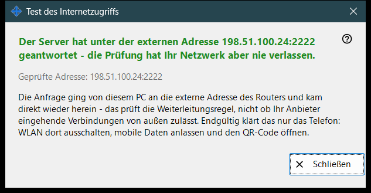
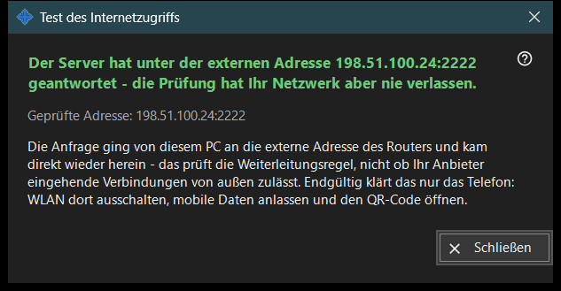

Test des Internetzugriffs
Verwendungszweck
Prüft von diesem PC aus, ob die freigegebene Adresse wie ein SFTP-Server antwortet. Es öffnet sich über die Schaltfläche «Internetzugriff testen» des Hauptfensters und zeigt die getestete Adresse, ein Urteil und eine Erklärung.


In dieser Reihenfolge
- Öffnen Sie das Fenster; es zeigt die Adresse und startet die Prüfung sofort.
- Warten Sie auf die Überschrift.
- Lesen Sie die Detailzeile darunter.
- Ist das Ergebnis nicht eindeutig, wiederholen Sie die Prüfung vom Telefon aus bei ausgeschaltetem WLAN und eingeschalteten mobilen Daten.
- Drücken Sie «Schließen».
Die Elemente
Getestete Adresse
«Geprüfte Adresse: ..» zeigt Host und Port. Während die Prüfung läuft, steht im Fenster «Test ..». Ist keine Adresse bekannt, lautet das Ergebnis «Noch keine Internetadresse.»; eine fehlerhafte Adresse ergibt «Ungültige Adresse.».
Urteile
«SFTP-Server erreichbar» - der Port hat mit einem SFTP-Banner geantwortet. «Port offen, aber keine SFTP-Antwort» - am Port lauscht etwas, aber es ist nicht unser Programm; prüfen Sie, ob die Router-Regel auf diesen PC und den Freigabeport zeigt. Eine Verbindung, die vor der Antwort geschlossen wurde, kann auf das Verbindungslimit hindeuten; versuchen Sie es erneut. Keine Antwort von diesem PC heißt, dass der Router die Anfrage an die eigene Adresse von innen womöglich blockiert.
Warum ein Ergebnis nicht eindeutig sein kann
Die Anfrage verlässt diesen PC in Richtung der externen Adresse des Routers und kommt direkt wieder nach innen zurück; sie testet also die Weiterleitungsregel und nicht, ob der Anbieter eingehende Verbindungen zulässt. Nur das Telefon kann das klären: Schalten Sie dessen WLAN aus, lassen Sie die mobilen Daten an und öffnen Sie den QR-Code. Gelingt die Verbindung weiterhin nicht, richten Sie mit der Schaltfläche «Internetzugriff einrichten» die Portweiterleitung ein.
Managereinstellungen · SFTP-Freigabeeinstellungen · Einstellungen des Austauschservers